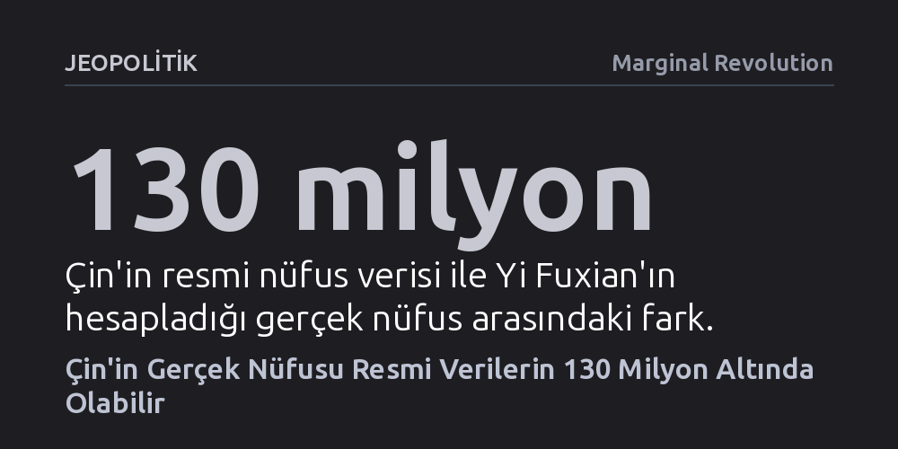

JEOPOLITIK · Marginal Revolution · 2026-10-15
Demograf Yi Fuxian, aşı ve okul kayıtlarındaki tutarsızlıklara dayanarak Çin'in gerçek nüfusunun 1,4 milyar değil, 1,27 milyar civarında olduğunu savunuyor. Meksika'nın nüfusuna denk gelen bu 130 milyonluk fark, Pekin ve Washington'ın küresel stratejilerini kökten sarsacak büyüklükte.
Çin'in küresel yükselişine ve süper güç rekabetine dair tüm stratejik hesapların, 130 milyon kişilik hayali bir nüfus üzerine kurulmuş olabileceğini gösteriyor.

Wisconsin-Madison Üniversitesi'nden demograf Yi Fuxian, Çin'in resmi olarak açıkladığı 1,4 milyarlık nüfus rakamının gerçeği yansıtmadığını ve ülkenin gerçek nüfusunun 1,27 milyar civarında olduğunu öne sürüyor. Yıllardır Çin'in nüfus politikalarını eleştiren araştırmacıya göre, arada kabaca 130 milyon kişilik devasa bir boşluk bulunuyor.
Bu fark tek başına neredeyse Meksika'nın toplam nüfusuna denk geliyor. Böylesi bir sapma basit bir sayım hatası olmanın çok ötesinde; hem Pekin'in hem de Washington'ın uzun vadeli stratejik planlarını ve birbirlerine yönelik algılarını temelden sarsacak nitelik taşıyor.
Yi Fuxian iddiasını kanıtlamak için resmi sayım tabloları yerine sağlık sisteminin ham verilerine başvuruyor. Çin'de yürürlükteki sağlık protokollerine göre her yeni doğan bebeğe doğumdan sonraki ilk 24 saat içinde BCG verem aşısı yapılması yasal bir zorunluluk. Çok dozlu aşı flakonları açıldıktan sonra en geç 30 dakika içinde tüketilmek zorunda olduğundan, uygulamada bir flakondan yalnızca 1,2 ila 1,6 doz aşı elde edilebiliyor.
Resmi verilere göre Çin hükümeti 2018 ile 2020 yılları arasında yılda ortalama 5,8 milyon aşı flakonu onayladı. Buna karşılık aynı dönemde resmi istatistikler yıllık doğum sayısının 14 milyonun üzerinde olduğunu öne sürüyordu. Bu iki veri yan yana konulduğunda, her bir aşı flakonundan ülke genelinde ortalama 2,4 bebeğin aşılanmış olması gerekir ki bu durum tıbben ve lojistik olarak imkansızdır.
Kanıtların ikinci ayağını ise eğitim sistemindeki kohort takipleri oluşturuyor. Çin Ulusal İstatistik Bürosu, 2000 yılında 17,7 milyon bebeğin dünyaya geldiğini duyurmuştu. Ancak aynı kuşak 2010 yılı genel nüfus sayımında 10 yaşına ulaştığında, kayıtlarda sadece 14,4 milyon çocuk tespit edilebildi.
Söz konusu kuşak 2015 yılında ortaokuldan mezuniyet aşamasına geldiğinde ise mezun sayısı 14,2 milyona kadar geriledi. Başka bir deyişle, yalnızca tek bir takvim yılına ait resmi doğum kayıtlarından yaklaşık 3,5 milyon kişinin izi zaman içinde silinmiş oldu. Yi; nüfus sayımlarını hastane doğumları, aşı partileri ve okul kayıtlarıyla çapraz sorguya tuttuğunda, resmi verilerin çok sayıda kaynaktan sistematik biçimde şişirildiğini vurguluyor.
Yi'ye göre nüfus verilerindeki bu yapay şişkinlik, sadece demografik bir mesele değil; iki süper gücün birbirine bakışını çarpıtan tehlikeli bir yanılsama üretiyor. Pekin yönetimi, arkasında resmi rakamların vaat ettiği devasa ve dinamik bir nüfus kitlesi olduğunu varsayarak aşırı bir stratejik özgüvene kapılıyor.
Washington ise Çin'in demografik gücünü olduğundan büyük görerek gereksiz bir jeopolitik kaygı geliştiriyor. Oysa gerçekte Çin nüfusu beklenenden çok daha erken ve sert biçimde yaşlanıp küçülüyor. Bu durum, geleceğin küresel ekonomik büyüme tahminlerinden askeri insan kaynağı projeksiyonlarına kadar tüm dengeleri değiştirebilir.